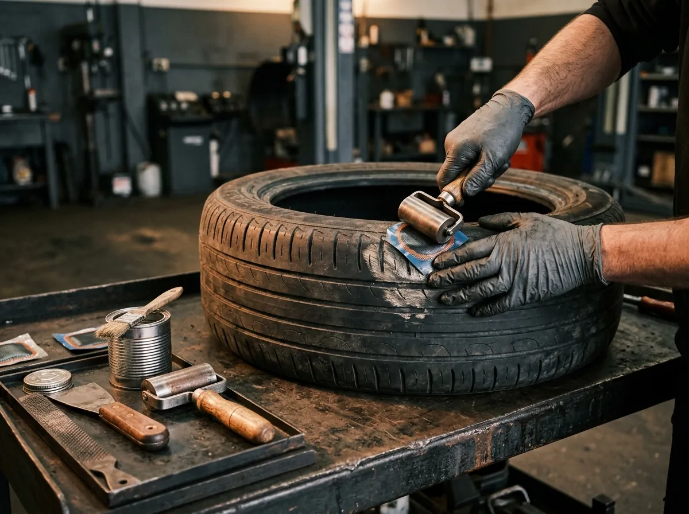
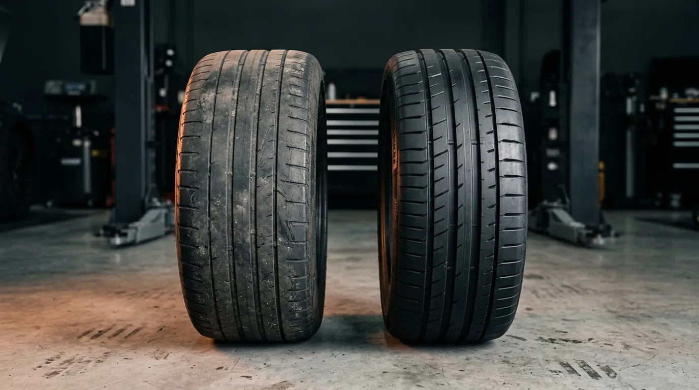
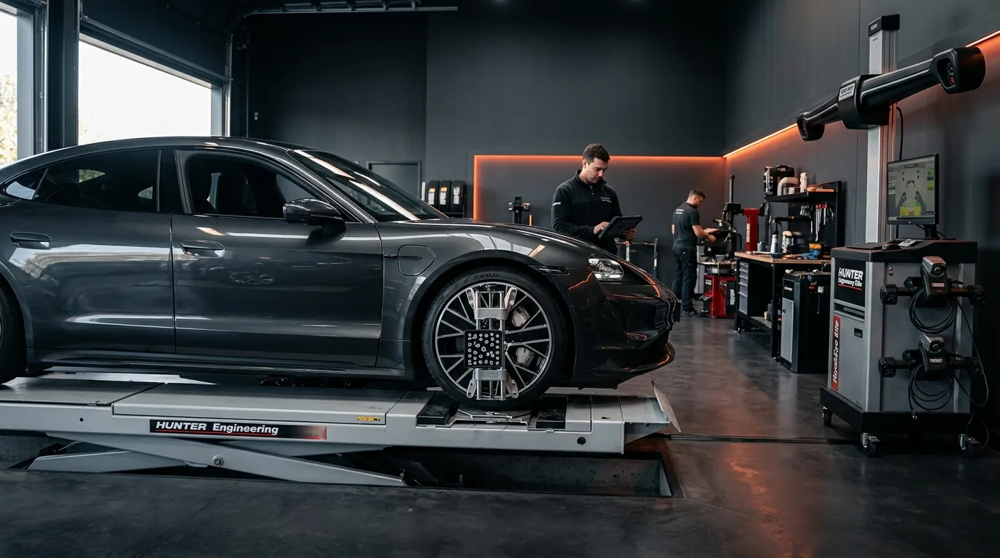
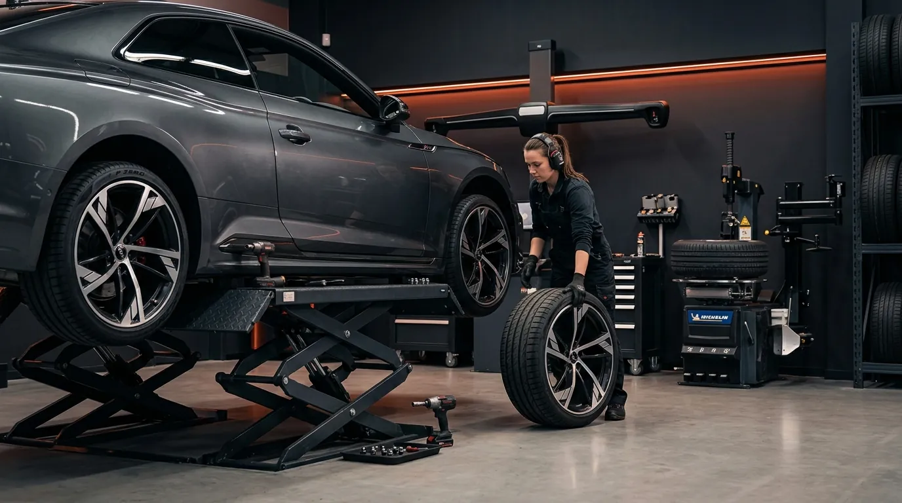
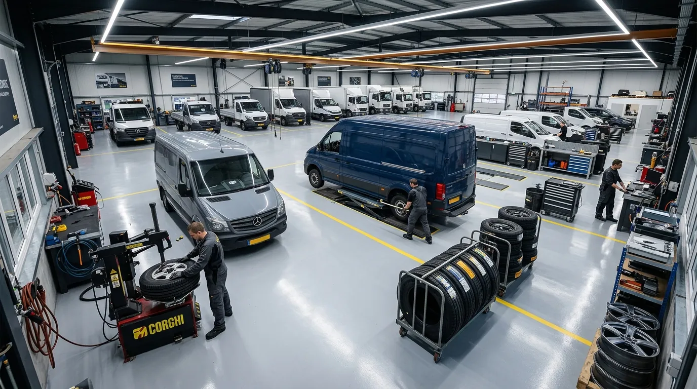

Prevent downtime
Catch tread wear, pressure loss and alignment issues before they turn into roadside delays.
From daily inspections and puncture repair to scheduled maintenance and bulk tyre replacement, ApexTread gives fleet teams one dependable tyre-care partner.
Choose a one-off service for a single vehicle or build a planned tyre-care routine across vans, cars, pickups and commercial fleets.
Catch tread wear, pressure loss and alignment issues before they turn into roadside delays.
Rotate, balance and maintain tyres at the right interval to improve usable tyre life.
Schedule repeat maintenance and bulk replacement around routes, depots and operating windows.
Each service is designed around a real fleet need — safety, uptime, tyre life or predictable maintenance planning.
Check tread depth, tyre condition, sidewalls, valves, wear patterns and roadworthiness across fleet vehicles.

Professional assessment and safe repair for repairable tread-area punctures, leaks and valve-related pressure loss.

Replace worn, damaged or non-repairable tyres with suitable options matched to vehicle duty, mileage and budget.

Correct steering geometry and wheel imbalance that can cause uneven wear, vibration and reduced tyre life.

Rotate tyres at planned intervals to balance wear across axles and make better use of available tread life.

Verify tyre pressures and investigate warning-light or sensor concerns before they affect safety, fuel use or wear.
Request urgent support for a vehicle stopped by tyre damage, rapid pressure loss or an unusable wheel.

Build repeat inspection, rotation, pressure and alignment checks around vehicle mileage and operating cycles.
Coordinate multi-vehicle tyre replacement and planned fleet support with consistent service and commercial scheduling.
Choose a service, vehicle or group of vehicles and the preferred service window.
We identify what needs immediate attention and what can be planned for a later maintenance window.
Approved tyre work is completed with the correct service for each vehicle’s condition.
Use the outcome to plan the next pressure, rotation, inspection or replacement interval.
Corporate plans are designed for teams that need scheduled inspections, repeat maintenance, coordinated replacements and a simpler way to manage tyre-related downtime.

Book an inspection, urgent repair or recurring tyre-care plan directly from ApexTread.